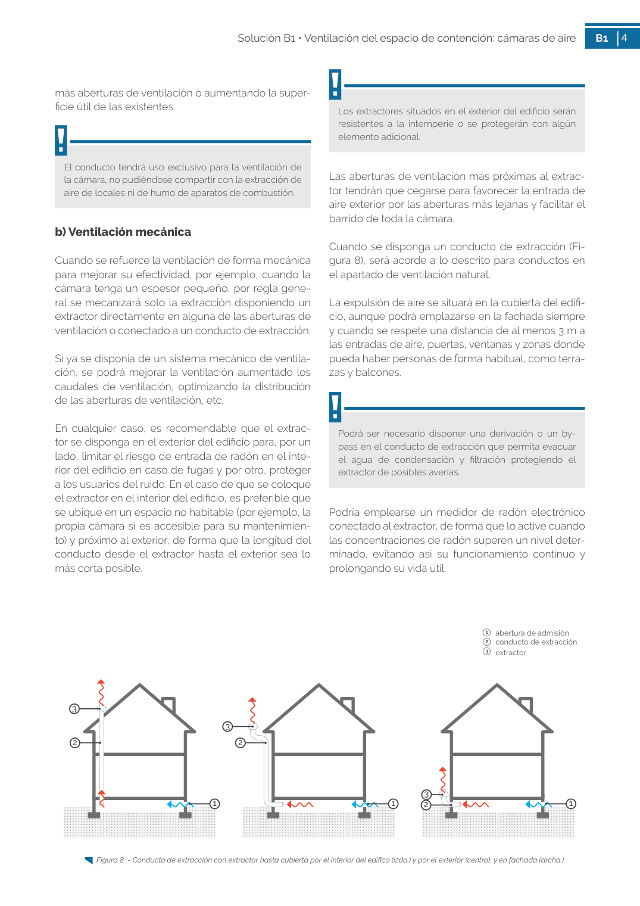

Solucion B1 Ventilacion del espacio de contencion camara de aire · edición sin-fecha · capa guia
Documento GUIA-PDF-064012f7a12a · SHA-256 del PDF b78448d0a375f9e7c0c436e93ac99588913afe934ff10824f8413d3918b0e9c7
Copia fiel del PDF fuente · Fuente oficial
Ficha de la disposición en la fuente oficial
Créditos y autoría en el PDF fuente. Reproducción con cita de fuente y autores.
Permiso literal: Se permite la reproducción total o parcial del contenido de este do Edición actual: septiembre 2020 cumento siempre y cuando se cite la fuente original y a sus autores.
Solución B1 • Ventilación del espacio de contención: cámaras de aire B1 66
Este documento ha sido elaborado por el Instituto de ciencias
de la construcción Eduardo Torroja (IETcc) bajo la supervisión
de la Dirección General de Agenda Urbana y Arquitectura del
Ministerio de Transportes, Movilidad y Agenda Urbana (MITMA).
SECRETARÍA GENERAL DE
AGENDA URBANA Y VIVIENDA MINISTERIO GOBIERNO El IETcc, perteneciente al Consejo Superior de Investigaciones DE TRANSPORTES, MOVILIDAD
DE ESPAÑA Y AGENDA URBANA DIRECCIÓN GENERAL DE
AGENDA URBANA Y ARQUITECTURA Científicas (CSIC), es el centro de investigación en edificación
de referencia en España. La Unidad de Calidad en la Construc
ción del IETcc asesora al MITMA en la elaboración del Código
MINISTERIO GOBIERNO DE CIENCIA Técnico de la Edificación que, desde el año 2019, cuenta con la DE ESPAÑA E INNOVACIÓN
sección HS6 Protección frente a la exposición al radón.
Dirección y Coordinación:
Ministerio de Transportes, Movilidad y Agenda Urbana
Esta ficha forma parte de una serie de documentos englobados Isabel Marcos Anasagasti
en una misma publicación, cuyo objetivo es constituir una he Raquel Lara Campos
rramienta de ayuda para el diseño de soluciones de protección Eduardo González de Prado
frente al radón: Instituto de ciencias de la construcción Eduardo Torroja CSIC
Pilar Linares Alemparte
■ Guía de rehabilitación frente al radón
Fichas de soluciones: Autoras:
Pilar Linares Alemparte
A: De aislamiento del edificio Sonia García Ortega
■ Solución A1. Barrera frente al radón Virginia Sánchez Ramos
■ Solución A1-1. Barrera frente al radón. Encuentros
■ Solución A2. Sellado de fisuras, grietas, encuentros y juntas Colaboradoras:
■ Solución A3. Puertas estancas Karina Angélica García Pardo
■ Solución A4. Creación de sobrepresión
Edita:
B: De reducción del radón antes de que penetre en los locales Centro de Publicaciones Secretaría General Técnica
a proteger Ministerio de Transportes, Movilidad y Agenda Urbana©
■ Solución B1. Ventilación del espacio de contención: cá Entidad colaboradora:
mara de aire Consejo Superior de Investigaciones Científicas · CSIC
■ Solución B2. Ventilación del espacio de contención: loca Ministerio de Ciencia e Innovación
les no habitables
■ Solución B3. Despresurización del terreno Catálogo de publicaciones de la Administración General
del Estado: publicacionesoficiales.boe.es
C: De reducción del radón tras penetrar en los locales a proteger
■ Solución C1. Ventilación de los locales habitables Centro virtual de publicaciones del Ministerio de Transpor
tes, Movilidad y Agenda Urbana: www.mitma.gob.es
Fichas de ejemplos:
Página web del Código Técnico de la Edificación:
■ Ejemplo A1+B3. Barrera frente al radón + despresurización www.codigotecnico.org
con red de tubos
■ Ejemplo A2+B1. Sellado + ventilación de la cámara sanitaria Maquetación y diseño gráfico:
■ Ejemplo A2+B3. Sellado + despresurización con red de tubos Lapizmente. Estrategia • Diseño Gráfico
■ Ejemplo A2+C1. Sellado + ventilación mecánica de los loca- Los contenidos o ideas recogidas en este documento pertenecen a
les habitables sus autores. Este documento está basado en el conocimiento dispo
nible en el momento de su publicación. No se aceptará por las institu
Publicación completa: ciones ni los autores implicados responsabilidad de ningún tipo por el
ISBN: 978-84-498-1045-9 uso de estas recomendaciones. Las figuras tienen carácter ilustrativo
NIPO: 796-20-136-5 y no deben interpretarse como detalles constructivos.
1ª edición: septiembre 2020 Se permite la reproducción total o parcial del contenido de este do
Edición actual: septiembre 2020 cumento siempre y cuando se cite la fuente original y a sus autores.Formatos: JSON del segmento · Markdown
3 extractor 3 2 1 3 2 1 2 3 1 Los extractores situados en el exterior del edificio serán resistentes a la intemperie o se protegerán con algún elemento adicional. Las aberturas de ventilación más próximas al extrac tor tendrán que cegarse para favorecer la entrada de aire exterior por las aberturas más lejanas y facilitar el barrido de toda la cámara. Cuando se disponga un conducto de extracción (Fi gura 8), será acorde a lo descrito para conductos en el apartado de ventilación natural. La expulsión de aire se situará en la cubierta del edifi cio, aunque podrá emplazarse en la fachada siempre y cuando se respete una distancia de al menos 3 m a las entradas de aire, puertas, ventanas y zonas donde pueda haber personas de forma habitual, como terra zas y balcones. Podrá ser necesario disponer una derivación o un by- pass en el conducto de extracción que permita evacuar el agua de condensación y filtración protegiendo el extractor de posibles averías. Podría emplearse un medidor de radón electrónico conectado al extractor, de forma que lo active cuando las concentraciones de radón superen un nivel deter minado, evitando así su funcionamiento continuo y prolongando su vida útil. 5 Solución B1 • Ventilación del espacio de contención: cámaras de aire B1 5
